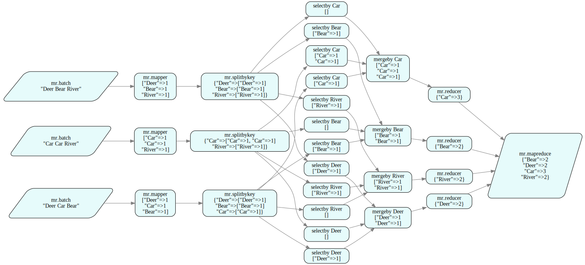
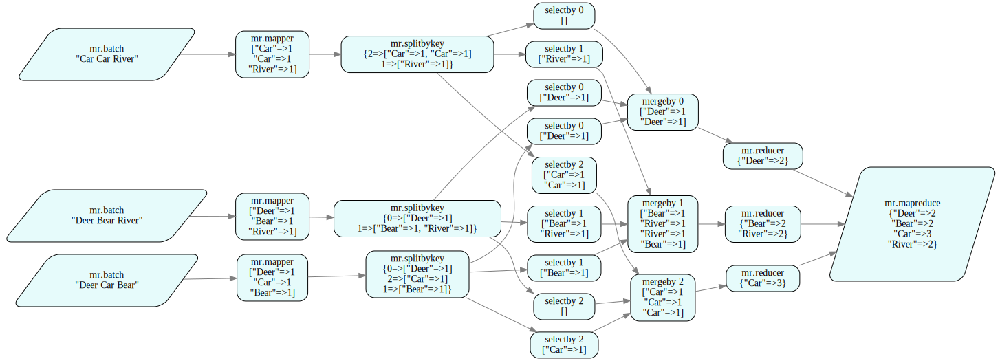
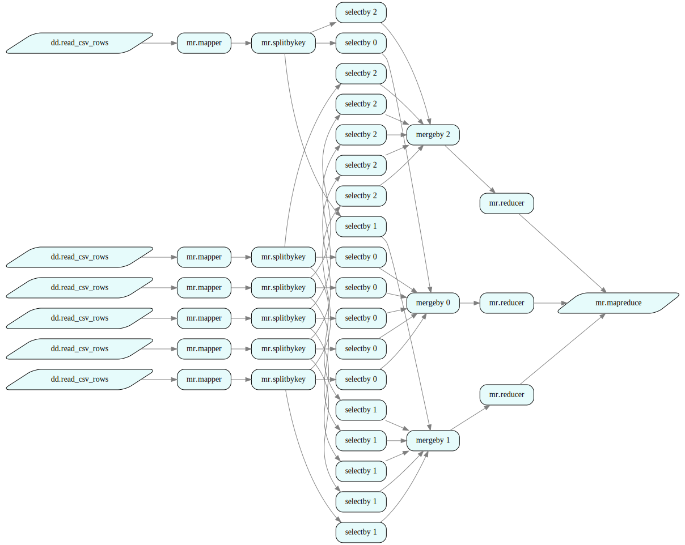
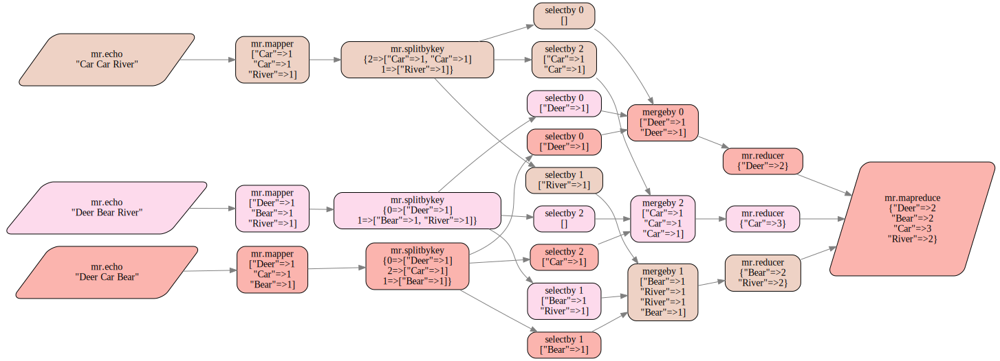

Tutorial 3: MapReduce
How to use this tutorial
- This tutorial is also available in Jupyter notebook format. To access and run the Jupyter notebook version of the tutorial, please sign up for free developer access at https://juliusgraph.com/user/signup, then go to Julius' developer environment at https://juliusgraph.com.
- Additional resources (video demos & blogs) are available at http://juliustech.co.
- To report bugs or request new features, please raise an issue here. To schedule a live demo, please go to http://juliustech.co. Please email us at info@juliustech.co for other general inquiries.
Introduction
In this tutorial, we use Julius RuleDSL to build a generic MapReduce pipeline, and illustrate the benefits of Julius' high order rules.
MapReduce is a common pipeline pattern which is often used for processing big data sets in parallel with multiple computers/workers. The MapReduce pipeline is a defining feature in some of the most popular data platforms, such as Hadoop.
In this tutorial, we explain how to build a generic and re-usable MapReduce pipeline using a few simple rules in Julius' low-code declarative RuleDSL, as opposed to writing excessive amounts of code as in traditional programming languages.
The MapReduce pipeline is composed of three main steps:
- map: a common
mapfunction is applied to every input data batch. - shuffle: workers redistribute the
mapoutput based on certain key values such that all data with the same key value is shipped to the same worker. - reduce: each worker then processes the results for its subset of keys by applying a
reducefunction. These reduced results are then collated as the final result.
The following image shows the generic MapReduce steps for the problem of counting the number of occurrences of words in a large collection of documents, which is given in the original paper of Hadoop. This word count example is often used to illustrate the MapReduce pipeline. We will replicate this example while building a generic MapReduce pipeline in the Julius RuleDSL from scratch.

The MapReduce input data is a collection of data batches. The creation of data batches has to be done before the MapReduce pipeline (as in the Splitting stage in the diagram above). For example, if the original data is a single large data file, it has to be split into multiple batches of smaller files before feeding into the MapReduce process.
The goal of this tutorial is to construct a generic mapreduce rule whose mapper, shuffler and reducer operators can be customized by the user. Even though the word count problem itself is trivial, we will implement the pipeline in a generic fashion so that it can be re-used for any MapReduce problems.
The readers are referred to the quick start tutorial for the basic concepts and syntax of the RuleDSL and Atom. But for completeness, we give a brief explanation of the rule syntax and graph execution here.
A rule in RuleDSL has the following syntax:
RuleDSL.@addrules namespace begin
rulename(rulearg1::Type1, rulearg2::Type2, ...) = begin
# additional code here transforming ruleargs to atom args and dependent args
AtomName[atomarg1, atomarg2...](deprule1(depargs1...), deprule2(depargs2...), ...)
end
endThe RuleDSL.@addrules is a macro used for processing the RuleDSL. It takes a namespace parameter and a set of rule declarations. The rule namespace helps organize the rules into related groups, and avoid name clashes. A rule in the RuleDSL is an instruction to create certain nodes in the computational graph. When the Julius GraphEngine processes a rule, it creates a node from the rule in the computational graph, and then recursively adds the dependent nodes to the graph according to the dependent rules specified in deprule1, deprule2 etc. The AtomName[atomarg1, atomarg2...] syntax defines an Atom object, which is used to process the data from the node's dependency.
As you can now appreciate, graph programming is quite different from traditional programming. Instead of writing imperative functions, we declare the logic and dependencies using rules, then let the Graph Engine create the application or systems as computational DAGs for us. That is why the amount of code required in graph programming is far less than traditional programming languages, since most of the boilerplate code for the program's flow control is automated away.
The generic mapreduce rule should include three stages: mapper, shuffler and reducer, thus it should look like:
RuleDSL.@addrules mr begin
mapreduce(
batches::Vector{RuleDSL.NodeRef},
mapper::RuleDSL.NodeRef,
shuffler::RuleDSL.NodeRef,
reducer::RuleDSL.NodeRef
) = begin
# ... rule definition goes here ...
end
endThe RuleDSL.NodeRef is a data structure that refers to another node in the graph. In Julius, every node is created by a specific rule, so that a dependency on another node can also be understood as a dependency on its underlying rule. A rule with a RuleDSL.NodeRef parameter, like the mapreduce rule above, is called a high order rule, as it defines a generic pattern whose behavior depends on other rules. The high order rule is extremely powerful in defining abstract and high level logic and behaviors. Furthermore, a high order rule can be passed as parameter to another rule, creating even higher order rules. The ability to nest high order rules is one of the reasons why the RuleDSL is both low-code and expressive. The high order rule is similar in spirit to the high order functions in functional programming, which we will discuss in more detail at the end of this tutorial.
We now proceed to implement the MapReduce pipeline as depicted in the diagram above using the Julius RuleDSL.
2. Generic Map/Reduce
2.1 Mapping
In the mapping step of the word count example, a batch of data is just a String such as "Mary has a lamb", which is converted into a Vector of Pairs: ["Mary" => 1, "has" => 1, "a" => 1, "lamb" => 1], where each entry represents one occurrence of a given word. At the shuffle stage, the vector is split by a key value, which is the word itself in the above diagram. Then all the pairs for the same keyword are sent to a single node where they are concatenated to form a single vector. Finally at the reducer stage, the total occurrence of each key word is deduced by simply counting their occurrences in the vector.
Given that the logic in the word count example is simple, we use a generic ApplyFn atom that is provided as part of the DataScience package, which can take any Julia function as an argument, so that we don't have to define many Atom types for every stage of the MapReduce process. The ApplyFn source code is listed below, which inherits from the abstract base type Datom and implements a generic method fwddata!, which will be called by the Julius Graph Engine at runtime to process data at individual nodes.
import GraphEngine.RuleDSL: fwddata!
struct ApplyFn <: RuleDSL.Datom
fn::Any # can be a function or any object with a callable method defined
params::Tuple # the first few arguments of `fn`
## this inner constructor captures `params` as a Tuple
ApplyFn(fn::Any, params::Any...) = new(fn, params)
end
fwddata!(self::ApplyFn, xs::Any...) = [self.fn(self.params..., xs...)]Using the generic DataScience.ApplyFn Atom, the mapper rule for word count example can be written as:
using GraphEngine: RuleDSL, GraphVM
using DataScience: ApplyFn
using AtomExt
wordmap(words::String) = [k => 1 for k in split(words)]
RuleDSL.@addrules mr begin
mapper(batch::RuleDSL.NodeRef, mapfun::Function) = ApplyFn[mapfun](batch...)
endThe GraphEngine.RuleDSL and GraphEngine.GraphVM modules have to be included in order to use the RuleDSL to create and run computational graphs.
The dependency of this rule is simply given as batch..., which specifies that the node represented by the batch parameter is a dependency. The three dot syntax ... is used to signal dynamic dependencies from a NodeRef parameter or variable. At runtime, the Julius GraphEngine first converts the ApplyFn[mapfun] specification to a call to the constructor of ApplyFn(mapfun). Then, the fwddata! method of the ApplyFn atom object is called to process the data from its input node specified by the batch parameter, which in turn calls the underlying mapfun function.
The mapper rule above takes a single RuleDSL.NodeRef as an argument, as it only applies to an individual batch. However, the mapreduce rule needs to process all the mapper results from all the batches. So, how do we make that information available to the mapreduce rule? We could create a collection of mapper rules as Vector{NodeRef} then pass it into the mapreduce rule:
mappers = RuleDSL.@ref(mr.mapper(batch, mapfun) for batch in batches)
mr = RuleDSL.@ref mr.mapreduce(batches, mappers, shufflers, reducers)where the batches is a Vector{RuleDSL.NodeRef} representing the collection of input batches. However, this approach would require us to also create vectors of shufflers and reducers, thus putting too much burden on the user to ensure their consistency. By observing that the first argument of the mapper rule is its input data batch and that the same mapper rule should be applied to all batch inputs, we instead choose to drop the first argument in the mapper rule before passing it as an argument to the mapreduce rule, such that:
mapper = RuleDSL.@ref mr.mapper(mapfun)
mr = RuleDSL.@ref mr.mapreduce(batches, mapper, shuffler, reducer)Inside the mapreduce rule, the first argument is added back for every data batch using the following prepend function, to recover the full form of the mapper rule:
prepend(ref::RuleDSL.NodeRef, firstarg::Any) = RuleDSL.NodeRef(ref.ns, ref.name, (firstarg, ref.params...), ref.meta)prepend (generic function with 1 method)The advantages of dynamically inserting the first parameter in the mapreduce rule are the following:
- First it is more readable and clear in that we only need the overall rule logic, but not its first argument that specifies a particular batch input.
- Secondly it is less error prone, as the mappers are created inside the
mapreducerule by inserting the right batch as its first parameter, making it fully consistent with the batch input parameter. We will apply the same trick forshufflerandreducerlater.
Let's test our mapping rule to see how it works. We have to define the input data batches first. For this word count example, we can simply use the ApplyFn atom with the identity function to return a rule argument, such that:
@addrules mr begin
batch(s::Any) = ApplyFn[identity, s]()
end
# some input data
_sentences = ("Deer Bear River", "Car Car River", "Deer Car Bear")
_batches = RuleDSL.@ref(mr.batch(s) for s in _sentences)
_mapper = RuleDSL.@ref mr.mapper(wordmap)
# prepend returns a new `NodeRef` such that `mappers` is of `Vector{NodeRef}` type
_mappers = [prepend(_mapper, batch) for batch in _batches]
# create a local graph, provide the node references and calculate
config = RuleDSL.Config()
gs1 = GraphVM.createlocalgraph(config, RuleDSL.GenericData())
GraphVM.calcfwd!(gs1, Set(_mappers));We have now created a computational graph for the mapper and executed it. How do we see the results? Julius provides an easy-to-use web UI for users to navigate and visualize the resulting data and logic in the graph. The following code block starts a local server so that the web UI can retrieve the resulting graph data, and it also overrides the RuleDSL.nodelabel method to customize the information displayed on the graph node.
using GraphIO
# a container of graphs
gss = Dict{String,RuleDSL.AbstractGraphState}()
# used for WebUI display purposes
port = GraphVM.drawdataport()
@async GraphVM.startresponder(gss, port);
# override node label display
import GraphEngine.RuleDSL: nodelabel
function nodelabel(gs::RuleDSL.AbstractGraphState, ref::RuleDSL.NodeRef)
shortrepr(x::Vector; sep=", ") = "["*join(shortrepr.(x), sep)*"]"
shortrepr(p::Pair; sep="=>") = shortrepr(p.first) * sep * shortrepr(p.second)
shortrepr(p::Dict; sep=", ") = "{" * join(shortrepr.(collect(p)), sep) * "}"
shortrepr(x::Any; sep="") = repr(x)
label = haskey(ref.meta, :label) ? ref.meta[:label] : "$(ref.ns).$(ref.name)"
try
data = RuleDSL.getdata(gs, ref)
if isone(length(data))
data = first(data)
end
label *= "\n" * shortrepr(data; sep = "\n")
catch
label *= ": n/a"
end
return label
endnodelabel (generic function with 4 methods)Users can interact with the resulting data from executing the graph by clicking on the url below to bring up the full web UI. As expected, the output of the mapper is a vector of entries like "word" => 1.
svg = GraphIO.postlocalgraph(gss, gs1, port; key="map");
GraphIO.postsvg(svg, "mapreduce_1.svg")view graph data at http://127.0.0.1:8080/ui/depgraph.html?dataurl=127.0.0.1:7739_map
Figure 1 - Mapping step.
2.2 Shuffling
The shuffling step consists of three substeps:
- take the outputs from the
mappersand split them into multiple chunks by certain key values computed from the mapped data. - move these chunks around so that all data with the same key value is gathered at the same node.
- concatenate all the chunks at the gathering node to recover the full collection of data for the subset of keys at the node.
To implement the first substep of the shuffling, we define a generic split function that takes a key function:
# given a collection of elements `xs` and a key function that computes the key of each of
# these elements, return a Dictionary of `key => x`
function splitbykey(keyfunc::Function, xs::Any)
splits = Dict()
for x in xs
key = keyfunc(x)
splits[key] = push!(get(splits, key, []), x)
end
return splits
endsplitbykey (generic function with 1 method)With this split function, we define three rules that corresponds to the three substeps of shuffling, and then combine them together in the generic shuffler rule:
@addrules mr begin
# use `splitbykey` function defined above
splitbykey(mapper::RuleDSL.NodeRef, keyfunc::Function) = ApplyFn[splitbykey, keyfunc](mapper...)
# select an element of a dictionary ir exists or return an empty `Vector{Any}`
selectkey(dict::RuleDSL.NodeRef, key::Any; label="selectby $(key)") = ApplyFn[dict -> get(dict, key, [])](dict...)
# merge
mergebykey(vecs::Vector{RuleDSL.NodeRef}) = ApplyFn[vcat](vecs...)
shuffler(mappers::Vector{RuleDSL.NodeRef}, keyfunc::Function, keys::Set) = begin
splits = RuleDSL.@ref(splitbykey(mapper, keyfunc) for mapper in mappers)
shuffled = Vector{NodeRef}()
for key in keys
# a `Vector{NodeRef}` that encompasses nodes with a given key
selected = RuleDSL.@ref(selectkey(s, key) for s in splits)
# merge the previously selected nodes outputs
merged = RuleDSL.@ref mergebykey(selected; label="mergeby $key")
# add merged element to the shuffled `Vector`
push!(shuffled, merged)
end
Alias(shuffled...)
end
endThese rules are self explanatory. It is worth mentioning that the selectkey rule uses a function closure when constructing the ApplyFn atom; and in the mergebykey rule, the ... follows a Vector{NodeRef} to specify dynamic dependencies on multiple rules in the vector. The label keyword in the selectkey rule is to customize the display information of the individual nodes in the graph web UI. To see how the label keyword is used for node display, please refer to the nodelabel function defined earlier.
We can test the shuffler using the words in the text as the split key. The first in the shuffler rule is a function that returns the first element of the "word"=>1 pair, which is the word itself.
# _mappers were created before
_shuffler = RuleDSL.@ref mr.shuffler(_mappers, first, Set(["Bear", "Car", "Deer", "River"]))
gs2 = GraphVM.createlocalgraph(config, RuleDSL.GenericData())
GraphVM.calcfwd!(gs2, Set([_shuffler]));svg = GraphIO.postlocalgraph(gss, gs2, port; key="mappers");
GraphIO.postsvg(svg, "mapreduce_2.svg")view graph data at http://127.0.0.1:8080/ui/depgraph.html?dataurl=127.0.0.1:7739_mappers
Figure 2 - Shuffling step.
2.3 Reducing
Finally, we get to the reduce part of the MapReduce pipeline. In the word count example, the reducer simply counts the occurrences of a word. The reducer rule is applied to the result of mergebykey, i.e. a vector of entries like "word" => 1. Even though all entries have the same key word in this example, we implemented the wordreduce in a generic way that it also works for a vector with multiple key values.
RuleDSL.@addrules mr begin
reducer(shuffled::RuleDSL.NodeRef, reducefun::Function) = ApplyFn[reducefun](shuffled...)
end
# the reducer function
function wordreduce(xs::Vector)
count = Dict()
for (key, _) in xs
count[key] = get(count, key, 0) + 1
end
return count
endwordreduce (generic function with 1 method)2.4 Map/Reduce Rule
We now put everything together and write a generic mapreduce rule. Note that we use the same prepend function to dynamically insert the first argument the for shuffler and mapper rules:
RuleDSL.@addrules mr begin
mapreduce(
batches::Vector{RuleDSL.NodeRef},
mapper::RuleDSL.NodeRef,
shuffler::RuleDSL.NodeRef,
reducer::RuleDSL.NodeRef
) = begin
# create one mapper node per batch
mappers = [prepend(mapper, batch) for batch in batches]
# create the shuffler
shuffler = prepend(shuffler, mappers)
# this gives the inputs to the shuffled nodes, which is where reducer must be applied
shuffled = RuleDSL.calcdeps(RuleDSL.@config, shuffler)
reducers = [prepend(reducer, m) for m in shuffled]
# finally the results (i.e. a Dict per reducer) are merged to a single Dictionary
ApplyFn[merge](reducers...)
end
endLet's test the MapReduce rule using our word count example:
# no need for the first argument as it will be populated at `mapreduce`
_shuffler = RuleDSL.@ref mr.shuffler(first, Set(["Bear", "Car", "Deer", "River"]))
_mapper = RuleDSL.@ref mr.mapper(wordmap)
_reducer = RuleDSL.@ref mr.reducer(wordreduce)
_mapreduce = RuleDSL.@ref mr.mapreduce(_batches, _mapper, _shuffler, _reducer)
gs3 = GraphVM.createlocalgraph(config, RuleDSL.GenericData())
GraphVM.calcfwd!(gs3, Set([_mapreduce]));svg = GraphIO.postlocalgraph(gss, gs3, port; key="mapred");
GraphIO.postsvg(svg, "mapreduce_3.svg")view graph data at http://127.0.0.1:8080/ui/depgraph.html?dataurl=127.0.0.1:7739_mapred

Figure 3 - MapReduce pipeline.
The resulting diagram from the Julius web UI is self explanatory, it matches exactly the diagram provided by the Hadoop paper. A side benefit of Julius is that it frees developers from the pain of having to manually draw the system diagram or UMLs ever again. The graph diagram above is an output from the Julius Graph Engine, which shows in great detail both the data and logic. Julius' convenient Web UI allows users to easily navigate and access the entire graph data and logic, which can be accessed by clicking the link above if you are running this example in Jupyter.
2.5 Split by Hashed Keys
So far our MapReduce implementation works as expected. However, there is a serious shortcoming in that we have to specify all the possible words in the shuffler, which is not known before we process all the input batches. In practice, we don't want to scan all the input batches just to find out all the possible words, which can be very time consuming when the inputs are large. Also, in live streaming applications such a pre-scan is not possible at all.
It would be much more convenient if we don't have to specify all the possible words in the shuffler. We can easily achieve this by supplying a different key function whose number of possible outputs are known, for example, by making use of the hash and the remainder % functions:
_shuffler = RuleDSL.@ref mr.shuffler(x -> Int(hash(first(x)) % 3), Set(collect(0:2)))
# reuse the same _mapper and _reducer declared earlier
_mapreduce = RuleDSL.@ref mr.mapreduce(_batches, _mapper, _shuffler, _reducer)
gs4 = GraphVM.createlocalgraph(config, RuleDSL.GenericData())
GraphVM.calcfwd!(gs4, Set([_mapreduce]));svg = GraphIO.postlocalgraph(gss, gs4, port; key="hash");
GraphIO.postsvg(svg, "mapreduce_4.svg")view graph data at http://127.0.0.1:8080/ui/depgraph.html?dataurl=127.0.0.1:7739_hash

Figure 4 - MapReduce pipeline with a shuffling step using hashed keys.
Now the shuffler splits the mapper data into 3 pipes, each of which is identified by an index number. In this implementation, multiple words can go to the same pipe. This implementation removes the need of pre-scans for obtaining all the words; it also works for live streaming use cases. Since the splitting by hash key is a much better implementation, we declare a couple convenience rules to encourage its use:
@addrules mr begin
splitbykey(mapper::RuleDSL.NodeRef, keyfunc::Function, N::Int) = begin
ApplyFn[splitbykey, x -> Int(hash(keyfunc(x)) % N)](mapper...)
end
shuffler(mappers::Vector{RuleDSL.NodeRef}, keyfunc::Function, N::Int) = begin
splits = RuleDSL.@ref(splitbykey(mapper, keyfunc, N) for mapper in mappers)
shuffled = Vector{NodeRef}()
for key in 0:N-1
# a `Vector{NodeRef}` that encompasses nodes with a given key
selected = RuleDSL.@ref(selectkey(s, key) for s in splits)
# merge the previously selected nodes outputs
merged = RuleDSL.@ref mergebykey(selected; label="mergeby $key")
# add merged element to the shuffled `Vector`
push!(shuffled, merged)
end
Alias(shuffled...)
end
endNow, the shuffler declaration can be simply given as:
_shuffler = RuleDSL.@ref mr.shuffler(first, 3)mr:shuffler/typeof(first):6553which becomes much easier to read and define than its equivalent earlier version of _shuffler. Note that since the rules support polymorphism, the hash version of splitbykey rule will be used if an integer is supplied as its 3rd argument.
So far we have demonstrated the MapReduce pipeline can be implemented using the RuleDSL by simply declaring a few high order rules. The resulting MapReduce rule is generic, powerful and reusable. Next, we will use it to solve a few common MapReduce problems.
3. Examples of MapReduce
3.1 Finding Friends
We can use the MapReduce pipeline to compute the common friends among hundreds of millions users in a social network. This feature can be applied to populate the You and Joe have N friends in common displayed in many social networks. Given the list of friends for each user, we proceed to define both a mapper and a reducer functions and make use of our previously defined mapreduce rule to compute common friends for every user pair $\left( u_i, u_j \right)$:
function friends_mapfun(batch::String)
dict = Dict{NTuple{2,Char},Vector}()
handler = strip.(split(batch, "=>"))
# no friends
if isone(length(handler))
return [dict]
elseif length(handler) > 2
return error("Unexpected data format.")
end
user, friends = handler
# no friends
if isempty(friends)
return dict
end
uid = only(user)
fids = only.(split(friends, ','))
for fid in fids
if isequal(uid, fid)
continue
end
key = tuple(sort!([uid, fid])...)
push!(dict, key => fids)
end
return dict
end
function friends_reducefun(shuffler::Vector)
out = Dict{NTuple{2,Char},Vector{Char}}()
for (k, v) in shuffler
if !haskey(out, k)
out[k] = v
else
out[k] = intersect(out[k], v)
end
end
return out
end
# each user is represented by a `Char`
_friends = IOBuffer("
A => B,C,D
B => A,C,D,E
C => A,B,D,E
D => A,B,C,E
E => B,C,D
")
_batches = RuleDSL.@ref(mr.batch(line) for line in eachline(_friends) if !isempty(line))
_mapreduce = RuleDSL.@ref mr.mapreduce(
_batches,
RuleDSL.@ref(mr.mapper(friends_mapfun)),
RuleDSL.@ref(mr.shuffler(first, 4)),
RuleDSL.@ref(mr.reducer(friends_reducefun))
)mr:mapreduce/NodeRef[5]gs5 = GraphVM.createlocalgraph(config, RuleDSL.GenericData())
GraphVM.calcfwd!(gs5, Set([_mapreduce]))0svg = GraphIO.postlocalgraph(gss, gs5, port; key="ff");
GraphIO.postsvg(svg, "mapreduce_5.svg")view graph data at http://127.0.0.1:8080/ui/depgraph.html?dataurl=127.0.0.1:7739_ff
Figure 5 - Finding common friends (open image in new tab for full resolution).
3.2 GroupBy
When dealing with large data sets, we often need to split them into smaller batches, and then apply the MapReduce pipeline to perform certain operations on individual batches to be then grouped together later. In this section, we will show how to implement the groupby operation on a large data set using the MapReduce pipeline.
In order to split the data in multiple batches, we make use of our DDataFrame (which stands for Distributed DataFrames) provided in the DataScience package. The following mapper and reducer rules implements the group by using any number of features within the MapReduce pipeline:
using DataFrames
using DataScience: DDataFrame
# `cols` can be anything accepted by `DataFrames.groupby` method
function groupby_mapfun(batch::AbstractDataFrame, cols)
dict = Dict()
gdf = groupby(batch, cols)
for (key, df) in zip(keys(gdf), gdf)
push!(dict, NamedTuple(key) => DataFrame(df; copycols=false))
end
return dict
end
function groupby_reducefun(shuffler::Vector)
out = Dict()
for (k, v) in shuffler
out[k] = append!(get(out, k, DataFrame()), v)
end
return out
end
filepath = joinpath(@__DIR__, "../data/iris.csv")
ddf = DDataFrame(filepath, nrows=25)
_batches = ddf.chunks
# use 3 reducing nodes for the reducing step
_mapreduce = RuleDSL.@ref mr.mapreduce(
_batches,
RuleDSL.@ref(mr.mapper(x -> groupby_mapfun(x, [:Species]))),
RuleDSL.@ref(mr.shuffler(first, 3)),
RuleDSL.@ref(mr.reducer(groupby_reducefun))
)mr:mapreduce/NodeRef[6]gs6 = GraphVM.createlocalgraph(config, RuleDSL.GenericData())
GraphVM.calcfwd!(gs6, Set([_mapreduce]))0nodelabel(::AbstractGraphState, ref::NodeRef) = haskey(ref.meta, :label) ? ref.meta[:label] : "$(ref.ns).$(ref.name)"
svg = GraphIO.postlocalgraph(gss, gs6, port; key="groupby");
GraphIO.postsvg(svg, "mapreduce_6.svg")view graph data at http://127.0.0.1:8080/ui/depgraph.html?dataurl=127.0.0.1:7739_groupby

Figure 6 - GroupBy.
The result is a DataFrame per group, such that, the first 10 rows look like:
_reducers = calcdeps(config, _mapreduce)
for reducer in _reducers
dict = RuleDSL.getdata(gs6, reducer)[]
for (k, v) in dict
println("$k => $(first(v, 10))")
end
end(Species = "Iris-setosa",) => 10×5 DataFrame
Row │ SepalLength SepalWidth PetalLength PetalWidth Species
│ Float64 Float64 Float64 Float64 String15
─────┼───────────────────────────────────────────────────────────────
1 │ 4.3 3.0 1.1 0.1 Iris-setosa
2 │ 4.4 2.9 1.4 0.2 Iris-setosa
3 │ 4.4 3.0 1.3 0.2 Iris-setosa
4 │ 4.4 3.2 1.3 0.2 Iris-setosa
5 │ 4.5 2.3 1.3 0.3 Iris-setosa
6 │ 4.6 3.1 1.5 0.2 Iris-setosa
7 │ 4.6 3.4 1.4 0.3 Iris-setosa
8 │ 4.6 3.6 1.0 0.2 Iris-setosa
9 │ 4.6 3.2 1.4 0.2 Iris-setosa
10 │ 4.7 3.2 1.3 0.2 Iris-setosa
(Species = "Iris-versicolor",) => 10×5 DataFrame
Row │ SepalLength SepalWidth PetalLength PetalWidth Species
│ Float64 Float64 Float64 Float64 String15
─────┼───────────────────────────────────────────────────────────────────
1 │ 4.9 2.4 3.3 1.0 Iris-versicolor
2 │ 5.0 2.0 3.5 1.0 Iris-versicolor
3 │ 5.0 2.3 3.3 1.0 Iris-versicolor
4 │ 5.1 2.5 3.0 1.1 Iris-versicolor
5 │ 5.2 2.7 3.9 1.4 Iris-versicolor
6 │ 5.4 3.0 4.5 1.5 Iris-versicolor
7 │ 5.5 2.3 4.0 1.3 Iris-versicolor
8 │ 5.5 2.4 3.8 1.1 Iris-versicolor
9 │ 5.5 2.4 3.7 1.0 Iris-versicolor
10 │ 5.5 2.5 4.0 1.3 Iris-versicolor
(Species = "Iris-virginica",) => 10×5 DataFrame
Row │ SepalLength SepalWidth PetalLength PetalWidth Species
│ Float64 Float64 Float64 Float64 String15
─────┼──────────────────────────────────────────────────────────────────
1 │ 4.9 2.5 4.5 1.7 Iris-virginica
2 │ 5.6 2.8 4.9 2.0 Iris-virginica
3 │ 5.7 2.5 5.0 2.0 Iris-virginica
4 │ 5.8 2.7 5.1 1.9 Iris-virginica
5 │ 5.8 2.8 5.1 2.4 Iris-virginica
6 │ 5.8 2.7 5.1 1.9 Iris-virginica
7 │ 5.9 3.0 5.1 1.8 Iris-virginica
8 │ 6.0 2.2 5.0 1.5 Iris-virginica
9 │ 6.0 3.0 4.8 1.8 Iris-virginica
10 │ 6.1 3.0 4.9 1.8 Iris-virginica
These previous examples are relatively straightforward in their logic. However, the mapper and reducer rules can encapsulate complicated logic, where both can represent entire graphs of great complexity. For example, the mapper can be the training and validation of an entire ML model, and the reducer can be a bagging algorithm that joins multiple models trained on different batches of data. We will show an example of a more complex use case in the next tutorial.
4. Advantages of Julius Graph
4.1 Graph Composition vs Function Composition
You may find the high level rules in RuleDSL have a lot similarities to high order functions in languages like Haskell, where a function can take another function as a parameter. So what are the main benefits of high order rules over the high order functions in a functional language?
The key difference is that high level rules are for composing graphs, while high level functions are for composing functions. The graph composition has a number of advantages over function compositions:
- It does not create deep call stacks. The results of a graph composition is nothing but another graph. Therefore it is much easier for a developer to visualize and debug. With function compositions, one has to use a debugger to access the intermediate results and call sequences, deep among the call stack of a program's runtime.
- The resulting graph composition can be automatically distributed without code changes. A clever graph distributor can analyze any graph and distribute it effectively to multiple worker computers. In contrast, the traditional functional code is permeated with loops and branches, making their runtime behavior unpredictable, and thus cannot be distributed automatically or efficiently.
- The graph composition is much more flexible. Once the graph is constructed, it can run in different modes. For example, the same graph can support both batch and streaming use cases without code changes, which is not possible in traditional functional programming.
- Lastly, graph compositions can mimic function compositions, but the reverse is not true. The
mapreducerule is a good example of how function compositions can be replicated using graph composition. However, it is not possible to create the equivalent graph compositions from function compositions in traditional functional languages.
You have seen some of the benefits of graph compositions in this and previous tutorials. Next, we will illustrate the second benefit of automatically distributing the MapReduce pipeline to multiple computers.
4.2 Distributed Map/Reduce
In order to demonstrate the automatic distribution, we set up a local cluster with 3 worker processes managed by a master process running at a port of the local computer. This setup mimics a remote master and worker process running on multiple physical computers. Please note that the local cluster automatically terminates after 15min of inactivity, so if the local cluster is no longer accessible after 15min, please re-run this entire tutorial notebook.
The following few lines of code starts the local cluster then connects to the master process, through which we gain control to all the worker processes:
using GraphEngine: RuleDSL, GraphVM
config = RuleDSL.newconfig(RuleDSL.Config(), :project => "MapReduce")
balancer = GraphVM.GlobalUnique()
my_domain = GraphVM.mydomain()
# draw a port number to start the local cluster esrvice
remoteport = GraphVM.drawdataport()7439# start a local master service at the given port
gs0 = GraphVM.RemoteGraphProxy(my_domain => 7225)
GraphVM.rpccall(gs0, :startlocalmasterservice, remoteport, 3)
gs = GraphVM.RemoteGraphProxy(config, my_domain => remoteport, balancer, GraphVM.GenericData())
GraphVM.wait4clusterinit(gs)Dict{UInt64, Pair{Float64, GraphEngine.GraphVM.WorkerStatus}} with 3 entries:
0x3e349b609f83991f => 1.64981e9=>Ready
0x04a171f0ac5c989c => 1.64981e9=>Ready
0xda2569a25765280c => 1.64981e9=>ReadyThe following is the complete definition of the generic mapreduce rule and corresponding functions for the word count example. Now we instantiate them in the remote cluster so that we can run the distributed word count with distribution.
GraphVM.@remote_eval gs begin
using GraphEngine: RuleDSL, GraphVM
using DataScience: ApplyFn
using AtomExt, GraphIO
end
# wait for the server to complete the task before proceeding
# wait is needed after every @remote_eval
GraphVM.waitcheckstatus(gs, RuleDSL.getconfig(config, :project));
GraphVM.@addrules gs mr begin
echo(x::Any) = ApplyFn[identity, x]()
mapper(batch::RuleDSL.NodeRef, mapfun::Function) = ApplyFn[mapfun](batch...)
reducer(shuffled::RuleDSL.NodeRef, reducefun::Function) = ApplyFn[reducefun](shuffled...)
selectkey(dict::RuleDSL.NodeRef, key::Any; label="selectby $(key)") = ApplyFn[dict -> get(dict, key, [])](dict...)
mergebykey(vecs::Vector{RuleDSL.NodeRef}) = ApplyFn[vcat](vecs...)
splitbykey(mapper::RuleDSL.NodeRef, keyfunc::Function, N::Int) = begin
ApplyFn[splitbykey, x -> Int(hash(keyfunc(x)) % N)](mapper...)
end
shuffler(mappers::Vector{RuleDSL.NodeRef}, keyfunc::Function, N::Int) = begin
splits = RuleDSL.@ref(splitbykey(mapper, keyfunc, N) for mapper in mappers)
shuffled = Vector{NodeRef}()
for key in 0:N-1
selected = RuleDSL.@ref(selectkey(s, key) for s in splits)
merged = RuleDSL.@ref mergebykey(selected; label="mergeby $key")
push!(shuffled, merged)
end
Alias(shuffled...)
end
mapreduce(
batches::Vector{RuleDSL.NodeRef},
mapper::RuleDSL.NodeRef,
shuffler::RuleDSL.NodeRef,
reducer::RuleDSL.NodeRef
) = begin
mappers = [prepend(mapper, batch) for batch in batches]
shuffler = prepend(shuffler, mappers)
shuffled = RuleDSL.calcdeps(RuleDSL.@config, shuffler)
reducers = [prepend(reducer, m) for m in shuffled]
ApplyFn[merge](reducers...)
end
end
GraphVM.@remote_eval gs begin
prepend(ref::RuleDSL.NodeRef, firstarg::Any) = RuleDSL.NodeRef(ref.ns, ref.name, (firstarg, ref.params...), ref.meta)
function splitbykey(keyfunc::Function, xs::Any)
splits = Dict()
for x in xs
key = keyfunc(x)
splits[key] = push!(get(splits, key, []), x)
end
return splits
end
wordmap(words::String) = [k => 1 for k in split(words)]
function wordreduce(xs::Vector)
count = Dict()
for (key, _) in xs
count[key] = get(count, key, 0) + 1
end
return count
end
import GraphEngine.RuleDSL: nodelabel
function nodelabel(gs::RuleDSL.AbstractGraphState, ref::RuleDSL.NodeRef)
shortrepr(x::Vector; sep=", ") = "["*join(shortrepr.(x), sep)*"]"
shortrepr(p::Pair; sep="=>") = shortrepr(p.first) * sep * shortrepr(p.second)
shortrepr(p::Dict; sep=", ") = "{" * join(shortrepr.(collect(p)), sep) * "}"
shortrepr(x::Any; sep="") = repr(x)
label = haskey(ref.meta, :label) ? ref.meta[:label] : "$(ref.ns).$(ref.name)"
try
data = RuleDSL.getdata(gs, ref)
if isone(length(data))
data = first(data)
end
label *= "\n" * shortrepr(data; sep = "\n")
catch
label *= ": n/a"
end
return label
end
endnodelabel (generic function with 4 methods)As you can see, there is no change in the RuleDSL and Julia functions at all, we simply sent them to the remote cluster to instantiate. Afterwards, we can execute the MapReduce pipeline with distribution. The distribution API, RuleDSL.jobdeps and GraphVM.dispatchjobs! are explained in more detail in the next tutorial on Distributed ML pipeline, so we won't repeat them here.
_sentences = ("Deer Bear River", "Car Car River", "Deer Car Bear")
_batches = RuleDSL.@ref(mr.echo(s) for s in _sentences)
N = 3
_mapreduce = RuleDSL.@ref mr.mapreduce(
_batches,
RuleDSL.@ref(mr.mapper(Main.wordmap)),
RuleDSL.@ref(mr.shuffler(first, N)),
RuleDSL.@ref(mr.reducer(Main.wordreduce))
)
alljobs, ds = RuleDSL.jobdeps(config, [_mapreduce], [:splitbykey, :reducer]);
GraphVM.waitcheckstatus(gs, RuleDSL.getconfig(config, :project));
GraphVM.initgraph!(gs)
GraphVM.dispatchjobs!(gs, alljobs; nocopy=Set([:splitbykey]));GraphVM.waitcheckstatus(gs, RuleDSL.getconfig(config, :project));
svg = GraphIO.postremotegraph(gs, port);
GraphIO.postsvg(svg, "mapreduce_7.svg")
Figure 7 - Distributed computation mode, where each node color represents a different worker.
GraphVM.rpccall(gs, :endcluster)
# revert back nodelabel
nodelabel(gs::RuleDSL.AbstractGraphState, ref::RuleDSL.NodeRef)=haskey(ref.meta, :label) ? ref.meta[:label] : "$(ref.ns).$(ref.name)"nodelabel (generic function with 4 methods)The resulting graph uses different colors to highlight the placement of nodes to individual remote workers. Nodes with the same color are placed and computed on the same worker computer.
Upon closer examination, we observe that the resulting graph distribution is optimal in that the work load is evenly distributed amongst 3 workers. The only shipment of data happens during the shuffling stage and the collation of final reducer results, when an arrow connects two nodes with different colors. There is no unnecessary data transfer in the resulting graph distribution.
The ability to automatically and optimally distribute graphs without code change is a powerful feature. Julius can handle the distribution of graphs as large as hundreds millions nodes across hundreds of computers. Using Julius, the same code runs efficiently on one worker instance or hundreds of worker instances, without the need for any manual tweaking or optimizations. Auto-scaling allows developers to quickly build and test their rules and functions on the local computer, then immediately scale it to run large jobs and heavy workloads in parallel without the need for any code changes. Julius' autoscaling automates away one of the most time-consuming and expensive aspects of enterprise systems, which is the constant need to manually optimize a system for better performance and scalability.
In a next toturial, "Distributed ML pipeline", we will dive into the Julius distribution and auto-scaling capabilities in much more depth, and compare them to existing tools like Dask and Dagger.jl.
5. Conclusion
The results speak for themselves: we built a generic MapReduce pipeline from scratch using 10 rules in the RuleDSL and 20 lines of additional Julia code. The resulting MapReduce pipeline implementation is generic, transparent and auto-scaling. Every intermediate calculation result is fully visible to the user in our web UI, it automatically distributes to multiple computers without the need for code changes for extreme scalability and performance.
Intrigued? If you are a developer, you should be. To hear more about the Julius Graph Engine, contact us at info@juliustech.co, or go to our website to schedule a demo or sign up for free access for developers.
Appendix: Additional Technical Tips & Notes
Here we explain some additional technical tips and points. We refer to the general structure of a rule in RuleDSL as:
rulename(ruleargs::Any...) = Atom[atomargs...](dependentrule(depargs...))- The
ApplyFnatom is used extensively in this tutorial. Though it is convenient, it was only intended for simple analytical logic. For complex analytical algorithms, it is better to define individual Atoms for reusability and readability. - There is an important difference between the
ruleargsandatomargsin the rule syntax. Theruleargsis serialized and sent to a remote worker during distribution, while atomargs are only created and used locally by individual workers. Therefore to enable distribution, everyruleargshas to be serializable with a stable hash, i.e. the same object shall retrieve the same hash regardless of which worker runs it. This requirement does not apply to atomargs. Julius uses a customized hash functionRuleDSL.hashparamfor rule parameters, that supports stable hashes for a wide variety of object types. However, the following are some instances where the serialization can fail or the hash becomes unstable:- If a rule parameter is a function closure with reference to any local variable, the serialization will fail. A workaround is to move the function closure inside the body of the rule. For example, the first hash key shuffler will fail:
but the second version of the shuffler will work fine:# fail to serialize: local variable used in function closure N = 3 _shuffler = RuleDSL.@ref mr.shuffler(x -> Int(hash(first(x)) % N), Set(collect(0:N-1)))# closure moved inside the rule declaration _shuffler = RuleDSL.@ref mr.shuffle(first, N) - A complex struct is more likely to have unstable hashes, so you can either make it inherit from
RuleDSL.ValueTypeusing the more stableRuleDSL.hashparam, or you can provide your own stable hash function by overriding theRuleDSL.hashparammethod for the type in question. To help detect the potential serialization and hash stability issues in rules, we provide a convenient macroRuleDSL.@isdistributable, which will flag any node in a graph that cannot be safely distributed.
- If a rule parameter is a function closure with reference to any local variable, the serialization will fail. A workaround is to move the function closure inside the body of the rule. For example, the first hash key shuffler will fail:
- You may be tempted to define a
mapreducerule that takes a mapper function and a reducer function, and create theRuleDSL.@ref mr.mapper(func)andRuleDSL.@ref mr.reducer(func)inside themapreducerule. As discussed before, this is less generic as themapperandreducerrule is not restricted to simple wrappers likeRuleDSL.@ref mr.mapper(func). Instead, any rule can be used as themapperandreducer. For example it could represent a complex graph with sophisticated logic. Or, they could in fact be high order rules themselves.
This page was generated using Literate.jl.